What these panels do
Supplementary panels are the small rectangular plates fixed under a main sign. They never stand alone. They refine the sign above them, answering when, where, how far, or to whom it applies. Read the panel together with the sign: the sign gives the rule, the panel gives the detail. Because a panel only modifies, an answer treating it as a stand-alone sign is almost always false.
The US bridge: two symbols to learn. American plaques spell things out in words; Italian panels compress them into symbols an American has never seen: the cross (†) means public holidays (Sundays included, not a church, not a cemetery), and the crossed hammers (⚒) mean working days. Learn those two and the time panels read themselves.
Watch the traps. The figure-symbol jokes are endless: † is not church-service hours, ⚒ is not a museum of tools. Ask what the panel does to the sign above it. Never read it alone.
Distance and extent panels
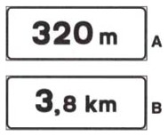
- A plain figure ("320 m", about 350 yd) is a distance panel, and it says how far ahead the rule or hazard begins, which is the gap between the sign and the point it refers to. Under an information sign, it is the distance left to the indicated point.
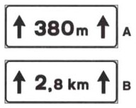
- A figure with arrows at both ends ("↑380 m↑", about 415 yd) is an extent panel: the stretch starts here, at the sign, and this is how long the rule or hazard continues.
Validity by time and day
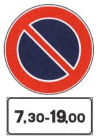
- An hours panel ("7,30-19,00") limits the sign to those hours, every day. "0-24" means around the clock.
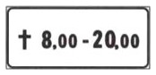
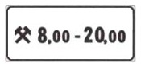
- The † (cross) limits the sign to holidays (giorni festivi). In Italy every Sunday is a holiday in this sense, and so is every national public holiday. The ⚒ (crossed hammers) limits the sign to working days (giorni lavorativi, also called feriali), which run from Monday to Saturday: Saturday is a working day, not a holiday. A panel that writes the days out in words, such as lun-ven (Monday to Friday), applies on exactly those days. Hours and day-type are usually combined , so "† 8,00-20,00" means holidays from 8:00 to 20:00.
- Outside the stated hours or days, the sign above simply does not apply, and the reverse trick is common: a ban valid 7:30–19:00 does not "authorize" anything during those hours; it bans during them.
Validity by vehicle, and "eccetto"
A panel can narrow a sign to a category of vehicle, in either direction. A silhouette on its own limits the sign to the vehicles pictured: the ban above applies to them and to nobody else. The word eccetto ("except") before the silhouette does the opposite: the sign applies to everyone but the vehicles pictured. Either panel can sit under a prohibition or a mandatory sign.
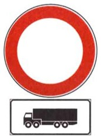
- Here the silhouette limits the no-transit disc: the ban applies only to the vehicles shown. Here the silhouette is a tractor-trailer (autoarticolato: a tractor unit pulling a semi-trailer, the American "semi"), which is the vehicle the panel names. So this sign bans that rig, and every other vehicle may pass; it never "provides that" they may proceed. The panel can sit under prohibition or mandatory signs.
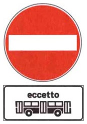
- The word eccetto ("except") exempts the vehicles shown: DO NOT ENTER with "eccetto bus" means no entry except for buses, and P with "eccetto bus" means everyone may park except buses.
Start, continuation, and end of a rule
A sign such as NO PARKING does not apply to a single point: it applies to a stretch of road. When the same sign is posted more than once along that stretch, a small arrow panel under it tells you which part of the stretch you are at: its beginning, its middle, or its end.
One idea reads every arrow panel: the arrow points toward the part of the road where the rule applies. An arrow pointing ahead says the rule lies ahead of you, so it starts here. An arrow pointing behind says the rule lay behind you, so it ends here. Arrows pointing both ways say the rule applies on both sides of you, so it continues.
Each panel comes in two forms, A and B, and the two mean the same thing. Form A is upright and is used when the sign faces you, across the road. Form B is laid flat and is used when the sign stands parallel to the road, for example on a wall beside it.
To read form B, picture the sign on the wall to your right and turn to face it. The road ahead of you is now on your left, and the road behind you is on your right. So an arrow pointing left points ahead and marks the start, and an arrow pointing right points behind and marks the end.
To remember the flat arrows. Left, the rule lies ahead. Right, the rule is to the rear.
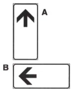
- The up arrow (A) and the left arrow (B) mean the rule starts here. The rule applies from this point onward: a no-parking, a no-stopping, a parking area, a pedestrian mall, or, under a danger sign, the danger itself.
- The start arrow is only a pointer along the road. It does not mean an uphill road, an obligation to go straight, the end of a one-way street, or a bus lane.
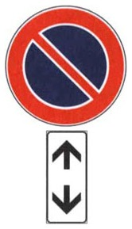
- The double arrow, upright or flat, means the rule continues. You are in the middle of the stretch, and the rule applies both behind you and ahead of you: a no-parking, a no-stopping, a no-passing, a speed limit, a stretch of slippery road, or, under a danger sign, the danger itself.
- The double arrow does not describe the road. It is not a two-way road, an alternating one-way, two permitted directions, an instruction to turn back, or the end of anything.
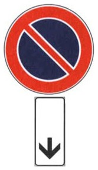
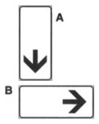
- The down arrow (A) and the right arrow (B) mean the rule ends here. The rule applied behind you and stops at this point: the end of a no-parking, a no-stopping, a parking area, a work zone, or a stretch of deformed or slippery road.
- The end arrow is only a pointer along the road. It does not mean a downhill road, a road closed to traffic, the only permitted direction, or the start of anything.
The lane panel and the course-of-the-road panels
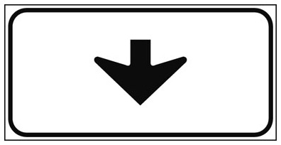
- A downward arrow panel mounted overhead ties the sign above to one specific lane. With a place name, it is the lane for that destination. It has nothing to do with ends of restrictions.
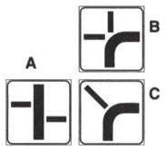
- The course panels under right-of-way signs draw the shape of the priority road through the intersection (the thick stroke) against the secondary roads (thin strokes). They belong to at-grade intersections, so never on autostrade.
Panels that specify "other dangers"
Under the "other dangers" triangle (the exclamation mark), and sometimes under other warning signs, a panel names the specific hazard.
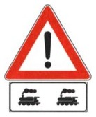
- This is how the pairing looks on the road: the generic OTHER DANGERS triangle on top, and under it the panel that says which danger (here shunting tracks). The triangle alone means only "a danger not covered by any other sign"; the panel gives it its meaning, and the response is always to slow down and be ready for what the panel names.
The following panels appear under it.
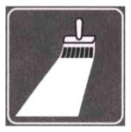
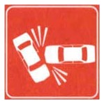
- The brush panel means the road markings are temporarily missing or being repainted. It hangs under OTHER DANGERS because no dedicated sign exists for that hazard.
- The accident panel means crashed vehicles may be on the carriageway, so slow down and, where possible, take another route. It is used on any road, not only autostrade, and it neither announces a garage nor tells you to switch on lights.
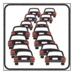
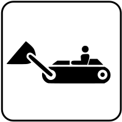
- The queue panel warns of stopped or crawling traffic ahead, so do not rear-end it; it tells you to increase, never reduce, your following distance. On an autostrada it can be a hint to leave at the next exit.
- The work machinery panel means excavators and loaders may be moving on the road, at a work site, not a road reserved for them or a parking area.
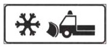
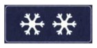
- The snowplow panel asks for at least 20 m (22 yd) of distance from the plow (not 100).
- Slippery from ice, under the slippery-road sign, means ice can form, above all when the temperature drops, snow-covered roads included.
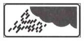
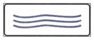
- Slippery in rain means mud can make the surface slippery: slow down and lengthen your following distance.
- The flooding panel marks a stretch that can flood in heavy rain or from sea storms, typically near a canal or ditch.
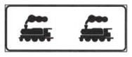
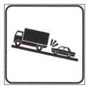
- Shunting tracks (binari di manovra, the two locomotives) are yard tracks where rail cars are pushed slowly back and forth to assemble trains. The crossing can stay occupied for long spells, and the panel is not a level crossing.
- Trucks slowing marks a steep climb where heavy vehicles crawl, so hold a prudent speed to avoid running into them. It does not ban passing them and it never asks for a shorter following distance.
Other common panels
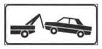
- The tow-away panel (rimozione, the tow-truck symbol) under a no-parking sign means the vehicle can be towed to the municipal impound lot or immobilized with wheel clamps (ganasce), at any time, not after some grace period. Vehicles displaying a disability placard are exempt.
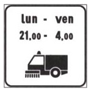
- The street-cleaning panel (a sweeper symbol with days and hours) under NO PARKING bans parking for everyone during the cleaning windows. The restriction is by time, not by vehicle type.
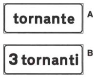
- The tornante / 3 tornanti panels announce one or more hairpin bends (sharp, particularly dangerous curves) under the bend warning sign.
Summary of key points
- A supplementary panel is a rectangular plate under a sign. It refines the sign and cannot stand alone.
- A plain number gives the distance to the start, and arrows at both ends give the length of the stretch.
- The † means holidays and the ⚒ means working days. Hours panels limit the sign to set times, and a ban during stated hours never authorizes anything.
- A vehicle silhouette limits the sign to that category; eccetto exempts the vehicles shown.
- An arrow pointing up or left marks the start, a double arrow marks the continuation, and an arrow pointing down or right marks the end. The overhead down arrow is different: it ties the sign to one lane.
- Under "other dangers" the panel names the hazard, so a snowplow panel asks for at least 20 m of distance, and a queue panel asks for more following distance, never less.
- The tow-away panel means impound or clamps, and placard holders are exempt. Course panels draw the priority road at a junction and never appear on autostrade.